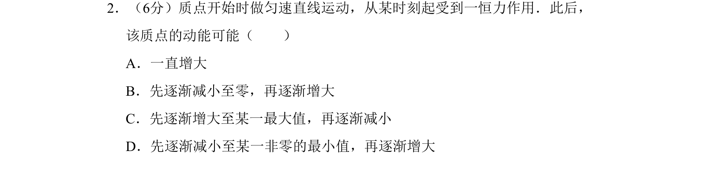
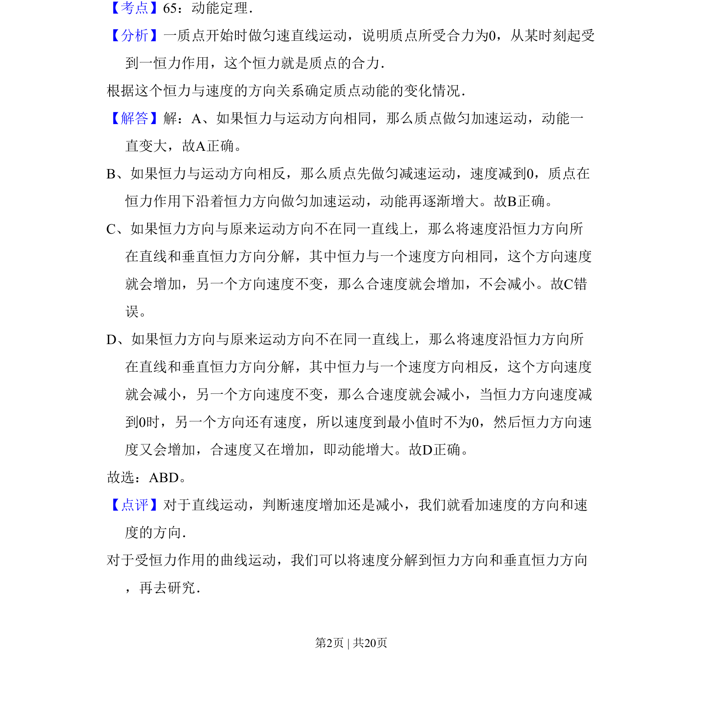

2011-新课标-02
考点：动能定理 恒力 速度的合成与分解 曲线运动
题面

摘要
该题考查恒力作用下质点动能的变化，需根据力与速度的方向关系分析不同运动情况。
关联考点
答案与解析


📄 原 PDF 第 2 页：
素材/真题/吉林/2008-2024·（吉林）物理高考真题/2011年高考物理试卷（新课标）（解析卷）.pdf
题干文本
2．（6分）质点开始时做匀速直线运动，从某时刻起受到一恒力作用．此后， 该质点的动能可能（ ） A．一直增大 B．先逐渐减小至零，再逐渐增大 C．先逐渐增大至某一最大值，再逐渐减小 D．先逐渐减小至某一非零的最小值，再逐渐增大
解析文本
【考点】65：动能定理．菁优网版权所有 【分析】一质点开始时做匀速直线运动，说明质点所受合力为0，从某时刻起受 到一恒力作用，这个恒力就是质点的合力． 根据这个恒力与速度的方向关系确定质点动能的变化情况． 【解答】解：A、如果恒力与运动方向相同，那么质点做匀加速运动，动能一 直变大，故A正确。 B、如果恒力与运动方向相反，那么质点先做匀减速运动，速度减到0，质点在 恒力作用下沿着恒力方向做匀加速运动，动能再逐渐增大。故B正确。 C、如果恒力方向与原来运动方向不在同一直线上，那么将速度沿恒力方向所 在直线和垂直恒力方向分解，其中恒力与一个速度方向相同，这个方向速度 就会增加，另一个方向速度不变，那么合速度就会增加，不会减小。故C错 误。 D、如果恒力方向与原来运动方向不在同一直线上，那么将速度沿恒力方向所 在直线和垂直恒力方向分解，其中恒力与一个速度方向相反，这个方向速度 就会减小，另一个方向速度不变，那么合速度就会减小，当恒力方向速度减 到0时，另一个方向还有速度，所以速度到最小值时不为0，然后恒力方向速 度又会增加，合速度又在增加，即动能增大。故D正确。 故选：ABD。 【点评】对于直线运动，判断速度增加还是减小，我们就看加速度的方向和速 度的方向． 对于受恒力作用的曲线运动，我们可以将速度分解到恒力方向和垂直恒力方向 ，再去研究．